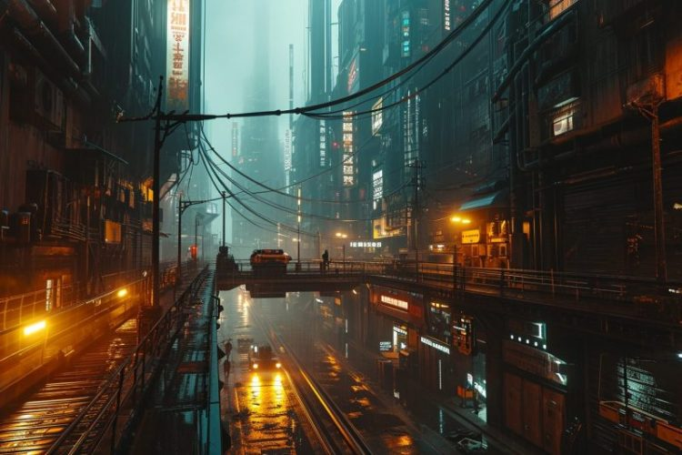

Bem-vindo ao Cyberpunk São Paulo 2080
Explore um futuro distópico onde neon e sombras se misturam na luta pela sobrevivência.
Conheça o LivroSobre o Livro
Este livro mergulha no coração de São Paulo em 2080, onde megacorporações dominam e a resistência floresce nas periferias iluminadas por neon. Prepare-se para uma jornada intensa de conspirações, tecnologia avançada e conflitos humanos.
O Cenário
Imagine São Paulo transformada em uma megacidade vertical, onde imponentes arranha-céus dominam o horizonte, conectados por uma rede de ruas flutuantes e pontes de alta tecnologia. A cidade pulsa com neon, mas também está mergulhada em um abismo de desigualdade, onde os ricos vivem nas alturas e as periferias são dominadas por gangues e corporações. Entre o caos urbano e o controle corporativo, São Paulo se tornou o coração de um Brasil futurista, uma selva de concreto e tecnologia onde a luta pela sobrevivência acontece a cada esquina.
Linha do Tempo: Caminho para 2080
2022 - Escalada da Guerra na Ucrânia
A invasão russa à Ucrânia desencadeia um conflito prolongado, marcando o início de um ciclo de tensões geopolíticas que culminam em eventos devastadores.
2027 - Ameaça Nuclear
A Rússia ameaça o uso de armas nucleares táticas em um cenário de escalada militar entre países da OTAN, provocando uma nova era de incerteza global.
2030 - Escalada Nuclear Global
O uso de armas nucleares estratégicas resulta em destruição massiva, afetando diretamente a Europa, América do Norte e partes da Ásia, enquanto o Brasil se mantém relativamente isolado do conflito direto.
2033 - Inverno Nuclear
As partículas na atmosfera resultam em uma drástica queda de temperaturas, causando crises alimentares e afetando a biodiversidade em escala global.
2037 - Colapso Estatal e Ascensão Corporativa
O colapso dos governos e a incapacidade de fornecer serviços básicos levam as mega corporações a assumir controle, criando cidades corporativas altamente tecnologizadas.
2040 - Surge a Nova União Soviética
Um movimento de antigos estados europeus e asiáticos contra o domínio corporativo começa a moldar a nova ordem mundial. Ao mesmo tempo, alianças sombrias surgem na China entre o governo e corporações como a WeiTech.
Gangues
Gangue das Poderosas
Uma gangue de prostitutas que agem para proteger a sua classe de certos maníacos que existem espalhados por SP.
Cães de Aço
Uma gangue de sequestradores e traficantes de cibernéticos. Conhecidos por seus implantes cibernéticos extremos, são considerados os mais violentos de todos.
Legião Bandeirante
Uma gangue ultranacionalista que busca restaurar os valores cristãos e conservadores de São Paulo, unindo nacionalismo extremo e fé religiosa.
Os Calçadões
Especialistas em hacking e contrabando de tecnologia, controlam o comércio ilegal de implantes e dominam o submundo digital de São Paulo.
O Cartel del Sol
Um sindicato do crime que controla o tráfico de drogas sintéticas e pessoas, com membros altamente modificados ciberneticamente.
Motoboys do Caos
Gangue de entregadores futuristas que usam motocicletas voadoras para realizar entregas ilegais e ataques relâmpagos.
Os Tecno-Caçadores
Grupo paramilitar de ex-militares e mercenários que executa operações de "limpeza" para corporações e elites, eliminando inimigos clandestinamente.
Baixe o Conto - "Entre Linhas de Código e Sangue"
Leia o conto ambientado no universo de Cyberpunk São Paulo 2080! Clique no link abaixo para baixar o PDF.
Baixar PDFContato
Quer saber mais sobre o projeto ou colaborar? Entre em contato: